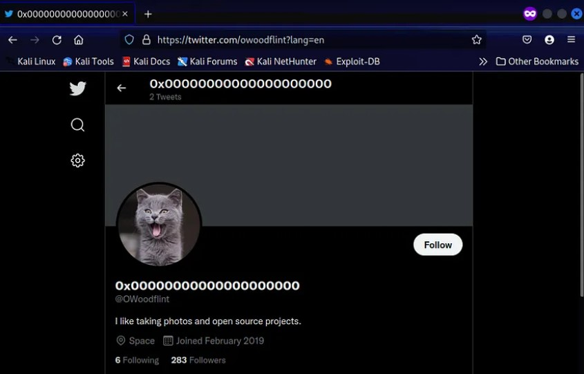
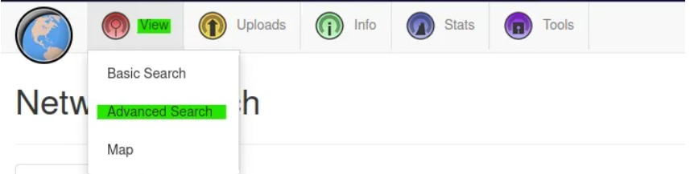
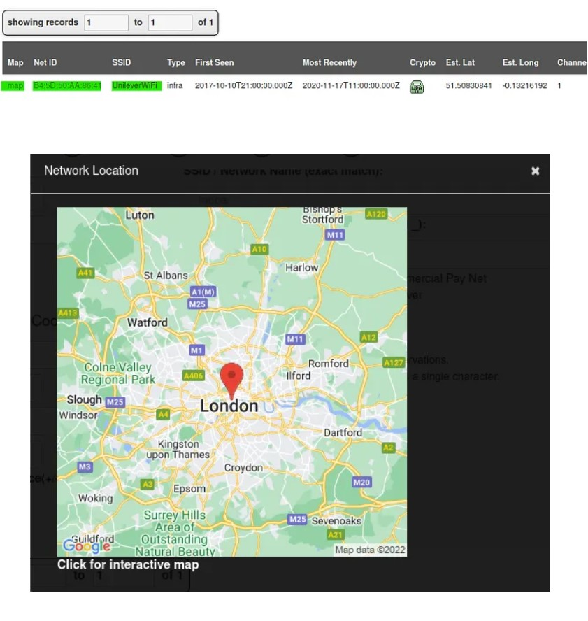
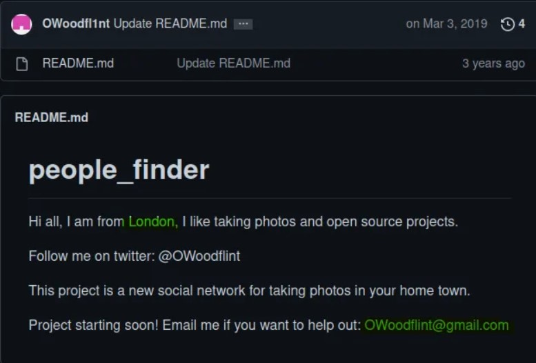
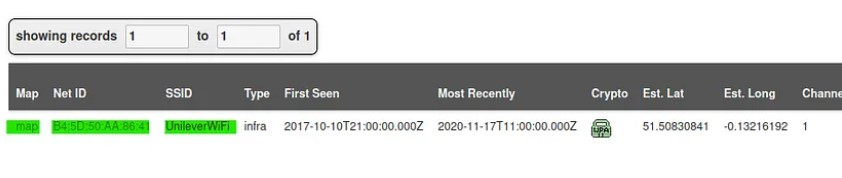
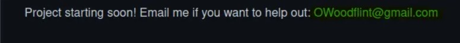
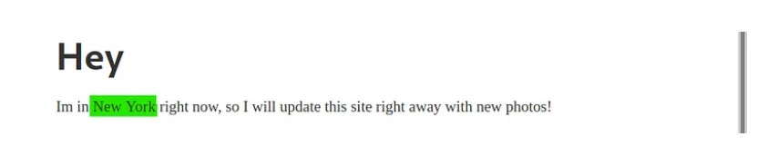
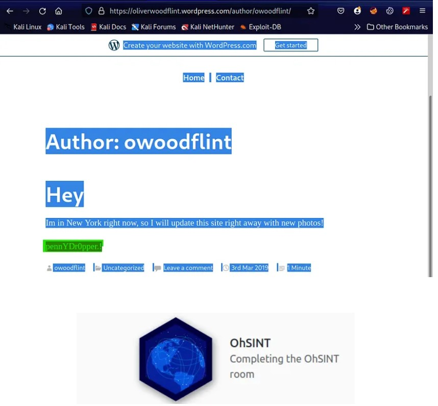

OhSINT — TryHackMe Walkthrough
Task 1 OhSINT

command: apt-get install exiftool
Exiftool: is a free and open-source program for reading, writing, and
manipulating images, audio, video, and PDF metadata.
we need to use exiftool to get the information about the downloaded jpg image.
command: exiftool WindowsXp.jpg
OWoodflint. Let's now search it on google and see whether we can find anything.Twitter:

| cat
2. What city is this person in?
|London
We can find the BSSID on the Twitter profile, to find the location we need to use wigle.net
After that paste the BSSID into BSSID/MAC and then click on the query to see the result.
Just create an account in wigle.net and go to the view option then advanced search as shown below.

at the bottom, you can see the result such as map, net ID, SSID, etc. click on the map option to the result!

OR
You can also find the location in GitHub profile too.

|UnileverWiFi
which we found from wigel.ne
6. Where has he gone on holiday?

|OWoodflint@gmail.com
got from GitHub profile:

5. What site did you find his email address on?
| Github
| New York

which is found hidden in the blog site we can find this password in two ways, one is by checking the source code or using ctrl+A.
7. What is this person's password?
|pennYDr0pper.!
By Inspect:
By using ctrl+A:
